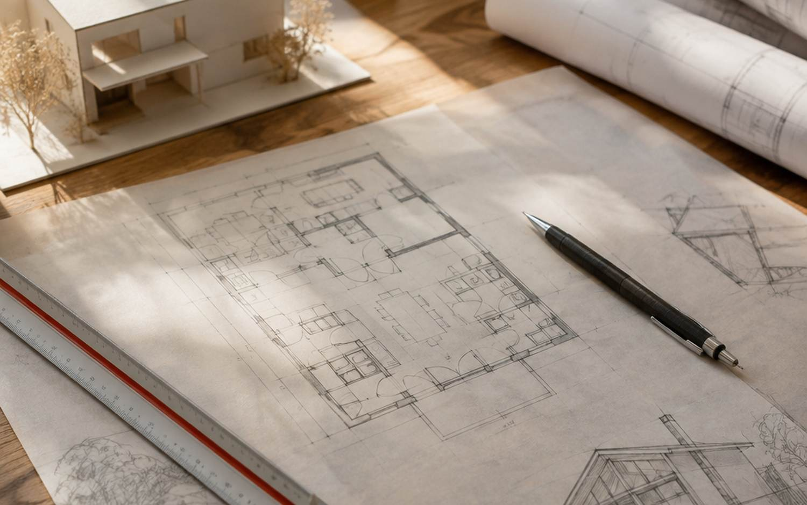
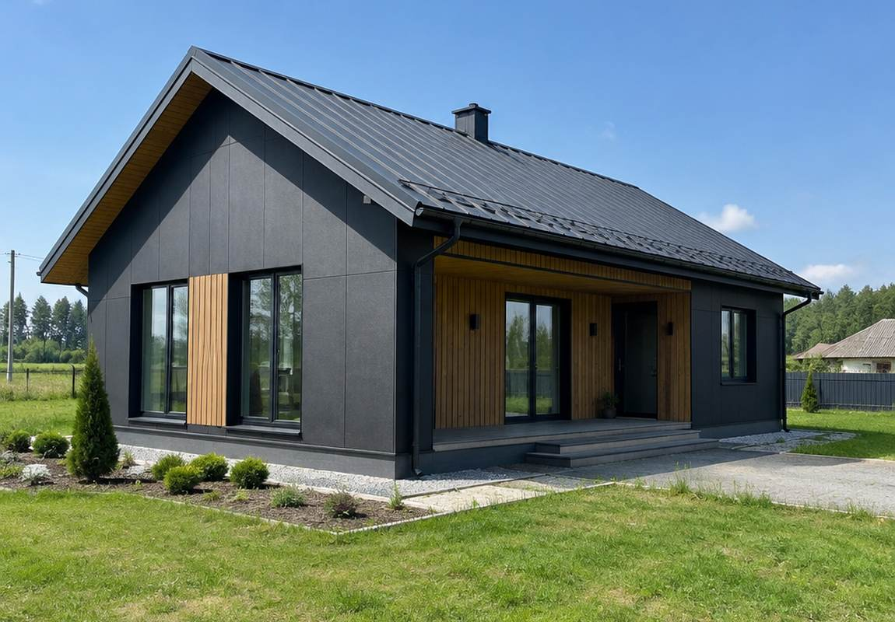
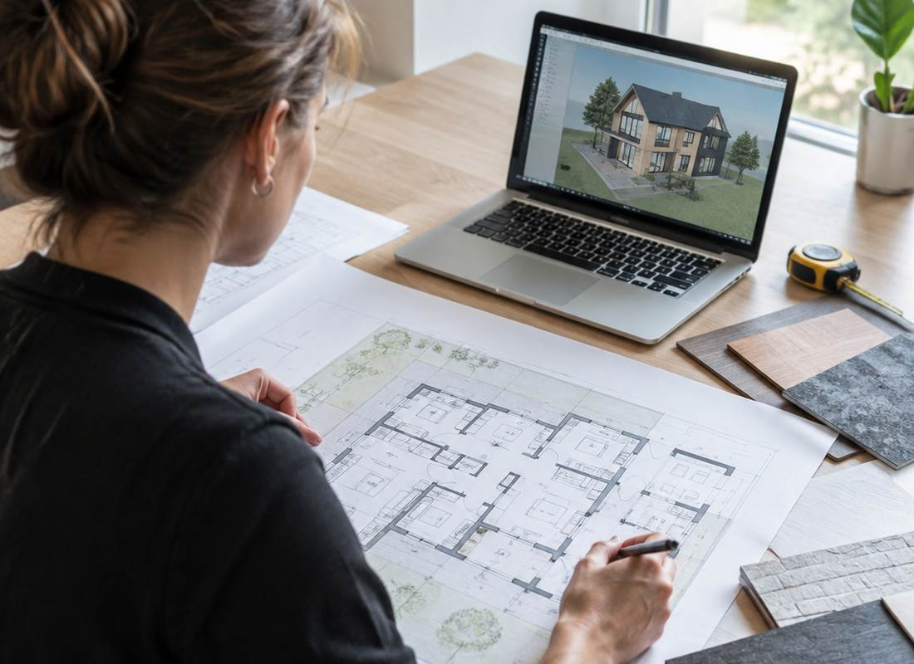
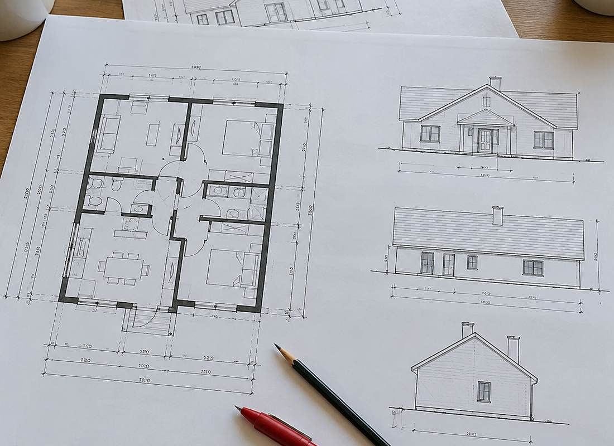
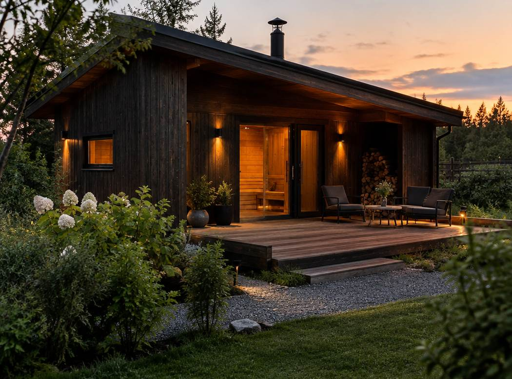

дом
Проект жилого дома
Архитектурно-строительный проект индивидуального жилого дома: от посадки на участок до фасадов и разрезов. Комплект листов, который принимает исполком.
Подробнее →
Слуцк · Солигорск · вся Беларусь
Архитектурно-строительное проектирование для индивидуальных домов и хозяйственных построек: новое строительство, реконструкция, перепланировка, правки в старый и типовой проект. Полный комплект листов, который принимает исполком.
Комплект
Отметьте, что нужно и что уже есть, — покажу вид работ и перечень листов. Это разговорная прикидка: точный состав зависит от объекта и требований конкретного исполкома.
Встреча в Слуцке и Солигорске — как удобнее заказчику. В другие города выезд по договорённости, обычно достаточно переписки и файлов.
Фасад
Разрез и фасад — это листы, по которым потом строят. Двиньте ползунки: увидите габариты, отметки высот и то, как уклон кровли меняет конёк.
Высота этажа 3,00 м, отметка пола 0.000. Общая площадь — прикидка для разговора, в проекте считается по планам с площадями.
Отправить габаритыУслуги
Дома, пристройки, бани и гаражи, перепланировка и работа с готовыми проектами. Можно заказать весь комплект, можно отдельные листы или правки.
дом
Архитектурно-строительный проект индивидуального жилого дома: от посадки на участок до фасадов и разрезов. Комплект листов, который принимает исполком.
Подробнее →постройки
Проекты хозяйственных построек: баня, гараж, летняя кухня, сарай, хозяйственный блок. Тот же порядок листов, что и для дома.
Подробнее →реконструкция
Реконструкция одноквартирного или блокированного дома: пристройка, надстройка второго этажа, мансарда, расконсервация, объединение нежилой и жилой постройки с изменением назначения.
Подробнее →перепланировка
Перепланировка существующего дома: перенос перегородок, новые проёмы, изменение площадей. С проверкой, что несущие конструкции остаются в работе.
Подробнее →правки
Внесение изменений в старый или типовой проект, корректировка. Если проект уже есть, второй раз его не рисуем — работаем с тем, что есть.
Подробнее →комплект
Собираю полный перечень листов: общие данные и пояснительная записка, генплан, планы этажей, план кровли, разрезы, фасады с четырёх сторон.
Подробнее →Объекты
Снимки объектов и процесса: чертежи, стройка по проекту, готовые постройки. Часть фото — типовые примеры, реальные листы показываю на встрече или в переписке.





Порядок
Сначала разбираемся с участком и требованиями, потом рисуем. Так проект не приходится переделывать после первого визита в исполком.
Что строим, размеры участка, что уже есть из документов.
Планировка, габариты, посадка на участок. Согласуем до чертежей.
Планы, кровля, разрезы, фасады, пояснительная записка.
Листы для исполкома и ответы на замечания, если они появятся.
Вопросы
Для нового дома и реконструкции проект нужен, чтобы получить разрешение и построить по согласованным габаритам. Без листов исполком заявление не примет.
Общие данные и пояснительная записка, схема генплана с посадкой на топосъёмку, планы этажей с размерами и площадями, план кровли с отметками, разрезы с отметками по высотам, ч/б фасады с отметками с четырёх сторон.
Можно, если он подходит по планировке и участку. Тогда делаем привязку и вносим изменения в типовой проект: фасады, разрезы, посадку, при необходимости планировку.
Без неё нельзя посадить дом на участок с привязками. Если топосъёмки нет, подскажу, что заказать и в каком виде нужны отметки и границы.
Территориально я в Слуцке, встречаемся в Слуцке или Солигорске. Проектирую по всей Беларуси: в другие города выезд по договорённости, обычно работаем удалённо.
Зависит от объекта и от того, как быстро согласуем планировку. Срок называю до начала работы, после того как понятна задача и есть топосъёмка.
Размеры участка, что уже есть (топосъёмка, старый или типовой проект) и что хотите построить. По этому видно, нужен новый проект или хватит корректировки, и какой комплект листов готовить для исполкома.